5580C44 front side bag module one lh or rh r r
- Path
- Procedures > 55 ELECTRICAL EQUIPMENT > 5580 SPECIAL ACCESSORIES > 5580C air bag system > 5580C44 front side bag module one lh or rh r r
- Kind
- repair procedure (removal / refitting; the operation number is the code)
- Applies to
- all engines; all production periods
- Interactive page
- https://sloeber94.github.io/elrnDB-a156/en/#/3238532
Applies to: all engines; all production periods
Applies to: all engines; all production periods
 Removing
Removing
 Refitting
Refitting7045A10 l/h or r/h front seat (one) - r+r
1. Before removing the seat, disconnect the side Air Bag electrical connection.
 | Name | Connector |
|---|---|---|
1 | Driver's Side Bag |
| Name | Connector |
|---|---|---|
1 | Passenger Side Bag |
2. For the passenger seat, disconnect the electrical connection on the passenger Air Bag disablement sensor.
| Name | Connector |
|---|---|---|
2 | Sensor in seat for disabling passenger Air Bag |
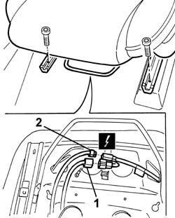
Applies to: all engines; all production periods
1. Disconnect the two bottom ends of the squab cover, hooked onto each other. Start from one end. To facilitate the operation, heat up the ends.
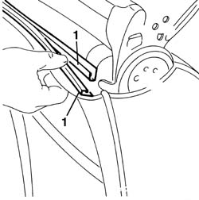
Applies to: all engines; all production periods
Detach the seat cover in the squab area to gain access to the two nuts securing the Air Bag module to the seat structure.
1. Unscrew both retaining bolts.
2. Remove the safety retainer and disconnect the electrical connection.
3. Remove the side Air Bag module.
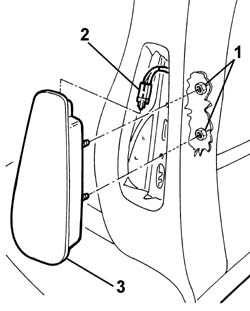
Applies to: all engines; all production periods
Place the Air Bag module in the special cupboard, resting it on a free surface with the bag facing upwards.
Applies to: all engines; all production periods
Refitting
RemovingObserve the following precaution.
If a new module is being fitted, attach the appropriate labels. Detach the removable part of the adhesive label from the new module and put it in a specific file recording the vehicle details (model, registration data, chassis no.) and the serial no. of the old control unit. This file should be kept for future checks. A new label is supplied together with the module to be stuck on top of the existing one. However, it should first be perforated to indicate the month and 10 years after the year when the module is fitted (e.g. 2009 will correspond to 1999).
Connect the electrical connection and the retainer.
1. Refit the Air Bag module in its seating, checking that the cover matches the module correctly. If necessary, put the cover in place.
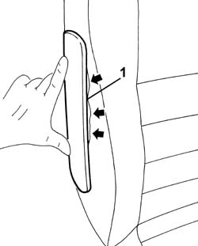
Applies to: all engines; all production periods
Working from the squab side, tighten the nuts to the specified torque.
 | Fastening | Component | Ø | Value (daNm) |
|---|---|---|---|---|
- | Nut | FRONT SIDE AIR BAG MODULE ASSEMBLY. | - | 0.85 |
Put the cover in place in the squab area.
Reconnect the electrical connections.
7045A10 l/h or r/h front seat (one) - r+r
Connect the battery.
Check the operation of the system using the Examiner or the other diagnostic equipment.
Applies to: engines: 3.2 V6; all production periods; only with equipment: GTA
Removing
RefittingFollow the warnings.
7045A10 l/h or r/h front seat (one) - r+r
7045A44 seat interior guard - r r
1. Disconnect the electrical connection for the side Air Bag from the support under the seat.
2. Disconnect the electrical earth connection from the support under the seat.
3. Disconnect the side Air Bag electrical wiring retaining bands.
4. Extract the side Air Bag electrical wiring from the duct.
5. Disconnect the electrical connections.
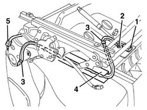
Applies to: engines: 3.2 V6; all production periods; only with equipment: GTA
1. Turn the seat over and, using the electric power supply, lower the backrest until it is in the end of travel position.
2. Press the tooth (2a) using a screwdriver on both sides of the seat and release the hooks (2b), releasing them from the pins (2c).
3. Release the retaining springs on both sides of the seat.
4. Remove the backrest (4a), releasing it from the pins (4b).
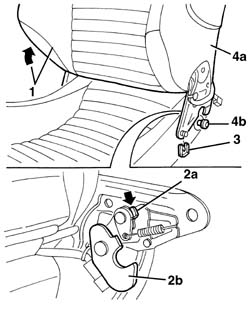
Applies to: engines: 3.2 V6; all production periods; only with equipment: GTA
1. Disconnect the two bottom ends of the squab cover, hooked onto each other. Start from one end.
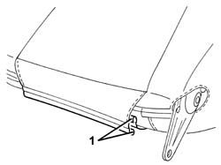
Applies to: engines: 3.2 V6; all production periods; only with equipment: GTA
1. Slightly raise the backrest front cushion.
2. Release the retaining springs.
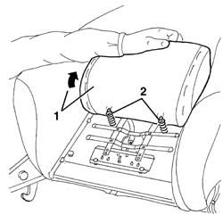
Applies to: engines: 3.2 V6; all production periods; only with equipment: GTA
1. Press the top part of the front cushion and cut the retaining seals using clippers.
2. Remove the front cushion.
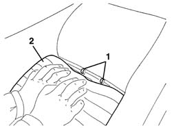
Applies to: engines: 3.2 V6; all production periods; only with equipment: GTA
1. Disconnect the four retainers for the cover shown in the diagram.
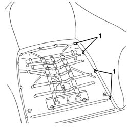
Applies to: engines: 3.2 V6; all production periods; only with equipment: GTA
1. Raise the cover and the upholstery slightly.
2. Undo the nuts fixing the side Air Bag.
3. Gently slide the side Air Bag wiring to facilitate the removal of the module.
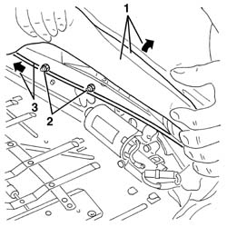
Applies to: engines: 3.2 V6; all production periods; only with equipment: GTA
1. Move the side Air Bag slightly.
2. Release the safety retainer for the electrical connection, sliding it.
3. Press the retainers (3a) and disconnect the electrical connection (3b).
4. Keep the side Air Bag module.
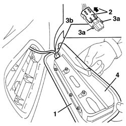
Applies to: engines: 3.2 V6; all production periods; only with equipment: GTA
Refitting
RemovingObserve the following precaution.
If a new module is being fitted, attach the labels as described below.
1. Detach the removable part (1b) of the adhesive label from the new module (1a). Place a copy of the label (1b) in a specific file containing the vehicle details (model, registration data, chassis number) and the serial number of the old module. This file should be kept for future checks.
2. Apply the detachable part of the original label (1b) to the bottom of the seat, where there are already similar labels for the seat and Air Bag wiring.
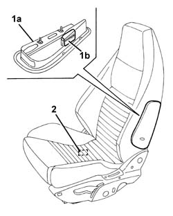
Applies to: engines: 3.2 V6; all production periods; only with equipment: GTA
Important.
Check visually for deformation or cracks in the seat frame.
Check that the welds and rivets on the joints between squab and cushion are undamaged.
Check the squab for torsional deformation by measuring the diagonals of the squab frame. Check that the measurements are the same and that the diagonals intersect at the centre of the squab.
Move the seat through all its various settings to ensure that movements take place without binding or noise.
Connect the electrical connection to the Air Bag module and attach the safety retainer.
Refit the Air Bag module.
Tighten the nuts to the recommended torque.
| Fastening | Component | Ø | Value (daNm) |
|---|---|---|---|---|
- | Nut | FRONT SIDE AIR BAG MODULE ASSEMBLY. | - | 0.85 |
Position the Air Bag wiring.
Lower the seat cover and connect the four retainers.
Place the front seat cushion in position and fasten the upper retainers using the seals.
Attach the springs and lower the cushion.
Connect the lower two ends of the backrest cover, attaching them to one another. Start from one end.
1. Place the backrest in position, attaching it to the pins.
2. Do up the retaining clips
3. Lift the tooth (3a), on both sides of the seat, then press the hooks (3b) and reattach them to the pins (3c).
4. Using an electric power supply, raise the backrest forwards.
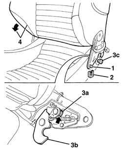
Applies to: engines: 3.2 V6; all production periods; only with equipment: GTA
Connect the heat pad electrical connection.
Fit the side Air Bag electrical wiring in the duct.
Connect the retaining bands to the side Air Bag electrical wiring.
Connect the electrical earth connection to the support under the seat.
Connect the side Air Bag electrical connection to the support under the seat.
7045A44 seat interior guard - r r
7045A10 l/h or r/h front seat (one) - r+r
Check the operation of the system using the Examiner or the other diagnostic equipment.
Topics linked from this page (7)
- 5580C air bag system
- 7045A10 l/h or r/h front seat (one) - r+r
- 7045a43 seat exterior guard - r r
- 7045A44 seat interior guard - r r
- K65 Sensor in seat for disabling passenger Air Bag
- Q30 Driver's Side Bag
- Q31 Passenger Side Bag
Topics that link to this page (6)
- 5580C86 side bag wiring harness (one) lh or rh - r r or replace
- 5580C92 connecting lead in seat for side air bag module r r
- 7045A85 Front seat BACKREST COVER, left or right - R.R.
- 7045A88 Front seat BACKREST UPHOLSTERY, left or right - R.R. with seat removed
- 7045A89 Front seat BACKREST UPHOLSTERY, left or right - R.R .
- 7045J34 front seat squab rake motor, l/h or r/h - r+r following electrical wiring check